From Tomorrow
明日から
A train line closing in three days. Notes exchanged between two strangers — each dated a day they haven’t lived yet. A story about time, loss, and the moments we almost miss.
Read more about From Tomorrow
The next book

A little bookshop that wasn’t there yesterday and won’t be there tomorrow.
Start here
明日から
The train line is closing in three days. Hina knows this. What she doesn’t know is why the note she just found beneath her seat is signed by someone she has never met — and dated tomorrow.
On Kindle now
Four worlds, each with its own heartbeat. Each one an invitation to slow down, pay attention, and believe that ordinary places hold extraordinary things.
明日から
A train line closing in three days. Notes exchanged between two strangers — each dated a day they haven’t lived yet. A story about time, loss, and the moments we almost miss.
Read more about From Tomorrow
桜スライス・カフェ
Thirteen quiet stories from a café that was never just a café. A place where people arrive carrying something — and leave a little lighter. Your table is already waiting.
Read more about Sakura Slice Café
完璧な日の出
Every morning, Hikari chases the perfect sunrise. Then a photograph falls from the sky — already developed, already perfect, and dated tomorrow. A story about memory, loss, and the people we love who never truly leave.
Read more about The Perfect Sunrise
君がいたとき
Sou’s grandmother leaves him a cassette tape. When he plays it, he hears his own voice — older, crying, begging someone not to leave. A story about grief, attention, and the one direction time moves in.
Read more about When You Were There
The cat finds you first. He leads you to Aoi Shiori, a little bookshop that wasn’t there yesterday and won’t be there tomorrow. Everyone who finds this place has lost something along the way.
Read more about The Blue Bookmark BookshopThe author
I am an Egyptian boy who had always dreamt of magic — the kind I’d always wished I could show everyone.
By day, I work as a Project Manager and assistant lecturer at university. In between, I write books about train stations and cafés and sunrises, and I build websites that try to feel like places worth visiting.